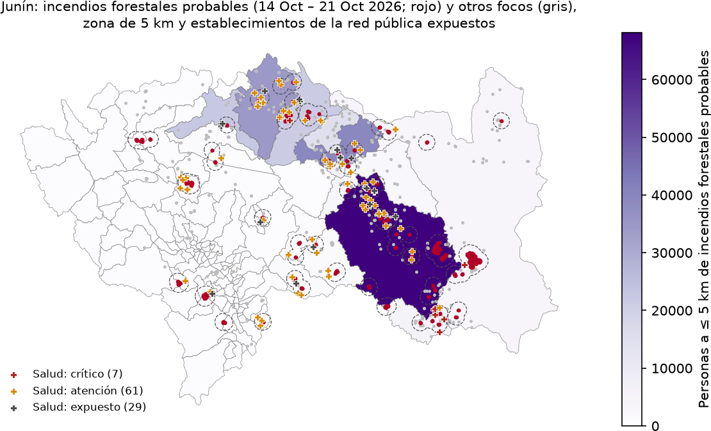

Mapas · Datos satelitales
Incendios en Junín: a quién expone el fuego y si la red de salud puede responder

Rojo: incendios forestales probables. Gris: otros focos. Círculos: zona de 5 km. Cruces: establecimientos de salud expuestos. Morado más oscuro: más personas a 5 km o menos.
Pregunta
¿Qué focos de calor son probablemente incendios forestales, a quién exponen y puede responder la red de salud?
Resultado
Con criterios de evidencia, las personas a 5 km o menos del fuego bajan de 746,046 a 232,748.
Demo interactiva
Qué hice
Crucé los focos de calor detectados por satélites de la NASA con datos de cobertura del suelo, luces nocturnas, población, establecimientos de salud, tiempo de viaje y cobertura móvil. Cada grupo de focos se clasifica con cuatro pistas: si persiste entre pasadas del satélite, si lo detectó más de un satélite, qué cubre el suelo y si hay luz nocturna alta. La exposición se calcula solo con los incendios forestales probables.
Tres hallazgos
- Los criterios cambian la cifra. De 746,046 personas cerca de algún foco se pasa a 232,748 cerca de un incendio forestal probable. El 69 % estaba cerca de focos sin evidencia de incendio forestal.
- El incendio más grande no es el que expone a más personas. El de Río Tambo tuvo 287 focos y unas 1,958 hectáreas, pero solo 399 personas y 1 establecimiento de salud a 5 km o menos.
- El punto débil de la red está en el valle del Ene. De los 7 establecimientos críticos, 6 están en Río Tambo y Vizcatán del Ene, a 3 o 4 horas estimadas de su hospital de referencia y sin 4G garantizado.
Limitaciones
- «Probable» no es «confirmado»: confirmar un incendio requiere imágenes de mayor detalle o un reporte de campo.
- Estar cerca no significa ser damnificado, y la población es una estimación de un modelo, no un censo.
- El tiempo de traslado también es modelado y en la selva tiende a quedarse corto.
También
Reel de 39 segundos sobre este proyecto. La narración usa mi voz clonada con IA.